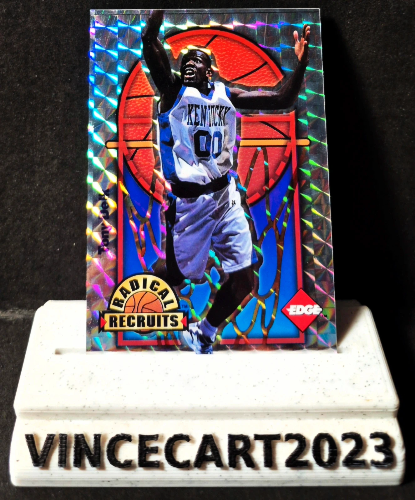

Tony Delk Radical Recruits 1996 Collector’s Edge – Numérotée /2500
3,0 €
🏀 Carte de collection Tony Delk – Radical Recruits, issue de la collection Collector’s Edge 1996.
✨ Superbe finition holographique / brillante
🔢 Carte n°6
🔥 Édition limitée numérotée 1250/2500
🏀 Tony Delk – Kentucky
📅 Draft NBA 1996 : 1er tour, 16e choix
Une belle carte vintage des années 90, particulièrement sympa avec son effet holographique et son tirage limité.
📸 État visible sur les photos recto/verso.
📦 Envoi rapide et soigneusement protégé.
Réduction possible pour plusieurs cartes achetées dans mon dressing.
Disponibilité à confirmer sur Vinted.